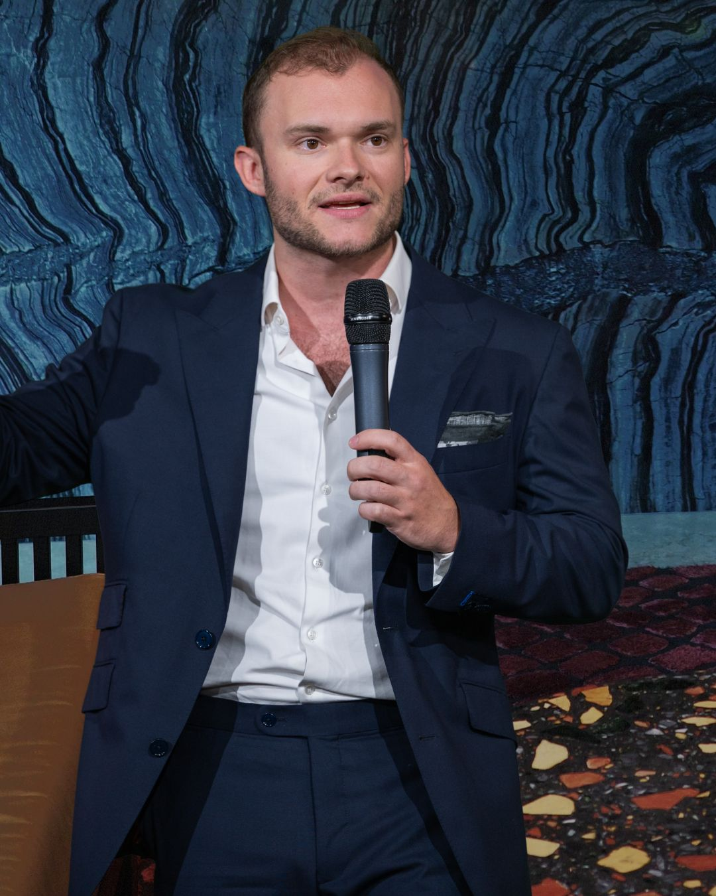

Cross-
Border
Leben und Wirtschaften in mehreren Ländern – ohne den Überblick über steuerliche Zusammenhänge zu verlieren.
Für Unternehmer und Investoren, deren Leben, Firmen und Vermögen nicht an einer Landesgrenze aufhören.
Die Realität vieler Unternehmer ist längst international. Wohnsitz, Firmen, Investments und Accounts verteilen sich über verschiedene Länder. Genau da wird es spannend – aber auch schnell kompliziert, wenn man eingleisig denkt.
Internationale Strukturen funktionieren nicht nach Schema F. Entscheidend ist, das gesamte Bild zu sehen: deine Länder, dein Business, dein Vermögen und deine langfristigen Ziele.
Leben und Wirtschaften in mehreren Ländern – ohne den Überblick über steuerliche Zusammenhänge zu verlieren.
Unternehmensstrukturen für Gründer und Unternehmer mit internationalem Fokus – immer im Kontext der tatsächlichen Lebensrealität.
Krypto-Vermögen im Zusammenspiel mit Wohnsitz, Unternehmen und langfristiger Struktur.
Ich bringe meine Erfahrung aus Krypto-Steuern, internationalen Lebensmodellen und grenzüberschreitenden Fragestellungen zusammen. Dabei geht es nicht darum, möglichst komplizierte Strukturen zu bauen. Sondern darum, eine Lösung zu finden, die wirklich zu deinem Leben, deinem Business und deinem Vermögen passt.
Je nach Fragestellung arbeite ich mit spezialisierten Partnern zusammen. So können unterschiedliche Perspektiven dort zusammenkommen, wo ein Fall mehr Expertise braucht – ohne dass daraus automatisch ein gemeinsames Angebot wird.

Unternehmens- und Vermögensstrukturen · Holdings · Investments
Für ausgewählte Fragestellungen im Bereich Unternehmens- und Vermögensstrukturen arbeite ich mit Daniel Reuter zusammen. Seine Perspektive ergänzt meine eigene dort, wo unternehmerische, strukturelle und vermögensstrategische Themen zusammenlaufen.
International denken heißt nicht, alles kompliziert zu machen. Es heißt, das gesamte Bild zu sehen. — Tami MönnigInteresse anmelden →